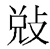

明抄《说郛》原本与见行刻本绝异[261]，京师图书馆有残本十余卷。此目在第二十八卷，注云：一卷，全抄，海昌张阆声。又得别本，因复以迻录，并注二本违异者于字侧。虽

误甚多，而甚有胜于海山仙馆[262]刻本者，倘加雠校，则为一佳书矣。十一年八月三日俟堂灯右写讫记之。《说郛》无总目，海山仙馆本有之，今据本文补写。八月三日夜记。
注 释
[260] 本篇据手稿编入，原无标题、标点。前一部分写于抄录稿的封面，后一部分则在抄录稿正文之后。
《遂初堂书目》，又名《益斋书目》，宋代尤袤家藏图书的目录，一卷。
[261] 《说郛》 笔记丛书，明代陶宗仪编，一百卷。缀录明代以前的笔记小说而成，兼收经史诸子及诗话文论，原书已佚。明抄《说郛》原本，现存五册，即原书的卷三、卷四及卷二十三至三十二，计十二卷。文中所说的“见行本”，指清初顺治四年（1647）陶珽编刊，揉杂窜乱陶宗仪原本的一二○卷《说郛》。
[262] 海山仙馆 清代广东番禺藏书家潘仕成的室名。该室刊有《海山仙馆丛书》，《遂初堂书目》列为第一种，道光二十六年（1864）印行。